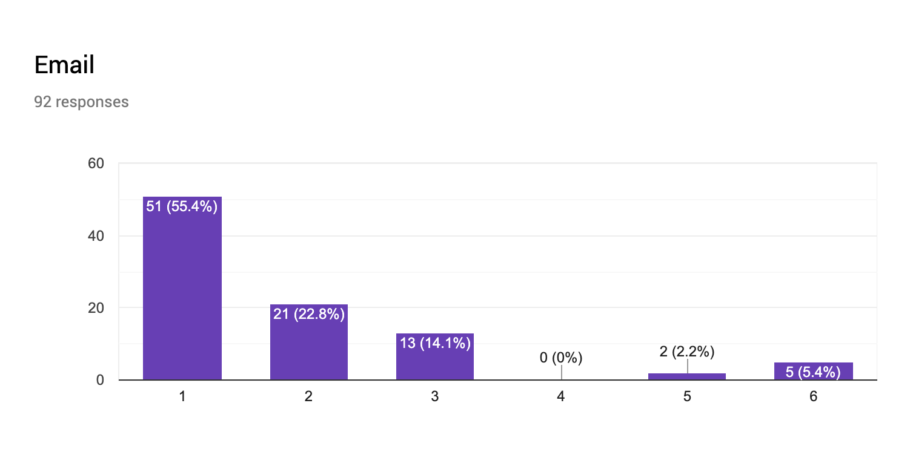
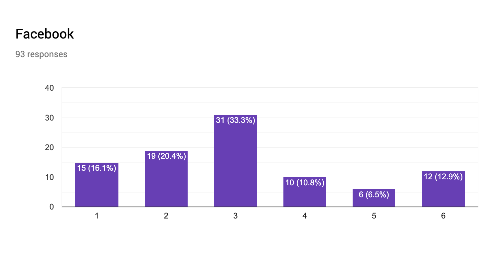
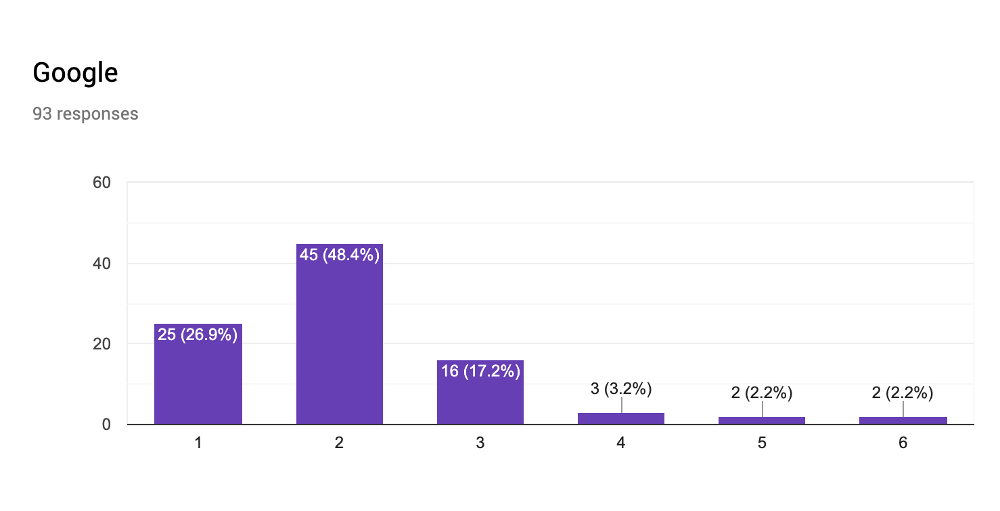

{{ site.description | default: site.github.project_tagline }}
This website contains two graphs, one for the top 200 websites in the United States and one for the top 100 sites in China. Each node on the graph represents a website –– its size is inversely related to its ranking, such that more popular sites will have larger nodes. Furthermore, nodes closer to the center are also more popular. Each edge connects a website to a social login provider that it supports as an authentication method.
Make sure to hover over nodes to highlight its edges and also try zooming in for more detail. If a node is highlighted and no edges can be seen, it indicates the website's lack of social logins.
83.5% (167/200) of the top US sites use logins.
50.30% (84/167) of the sites that use logins have social logins available.
The most popular social login is Facebook. 78.57% (66/84) of the sites that support social logins use it.
Followed by Google. 69.05% (58/84) of the sites that support social logins use it.
Followed by Twitter. 14.29% (12/84) of the sites that support social logins use it.
We sent a survey in April 2019 to Princeton University students through a few residential college email chains, asking them to rank their login options in order of preference (with options of Email, Facebook, Google, Twitter, LinkedIn, and Yahoo), and these were the 3 most popular responses:



Amazon logins are used exclusively for Amazon-owned services.
75.0% of the top 100 Chinese sites use logins.